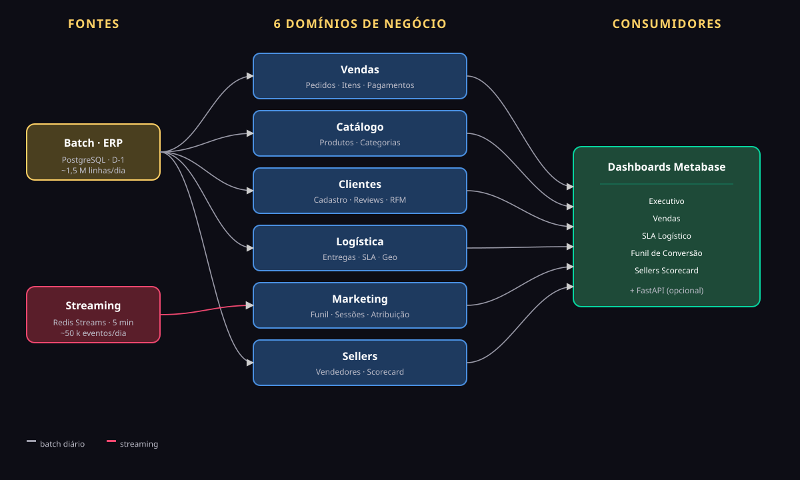

Protótipo de Ciclo de Vida de Engenharia de Dados
Planejamento e Desenho Arquitetural · Parte 1 de 2
Cada pedido envolve cliente, vendedor, meio de pagamento e operador logístico — em todos os estados, com ciclos longos da compra à avaliação. Os dados nascem dispersos em sistemas que não conversam.
| Dimensão | 📦 Batch (Operacional) | ⚡ Streaming (Comportamento) |
|---|---|---|
| Fonte | PostgreSQL simulando ERP Dataset Olist — 9 tabelas reais |
Simulador Python → Redis Streams Fallback: JSONL em disco |
| Formato | Tabelas relacionais → Parquet | Eventos JSON → Parquet |
| Volume | ~1,5 M linhas · 45 MB | ~50 k eventos/dia · 5 MB/dia |
| Frequência | Diária (D-1, noturno) | Contínua, micro-batch 5 min |
| Latência SLA | Dashboard até 6h depois | ≤ 5 minutos |
| Exemplos | Pedidos, pagamentos, avaliações, cadastros | page_view, search, add_to_cart, checkout_abandon |
Tratamos os dois porque contam histórias diferentes da mesma jornada.


Bronze captura · Silver limpa · Gold modela · cadência anotada no próprio fluxo

Dois ritmos independentes: trem diário @02:00 (sequencial) + streaming */5min (fire-and-forget).
| Arquitetura | Por que não ganhou |
|---|---|
| Data Warehouse puro | Carrega dados já transformados — perde raw, não reprocessa. Inadequado para eventos semi-estruturados. |
| Data Lake puro | Sem estrutura vira "pântano de dados". Não cobre confiabilidade exigida. |
| Lambda puro (Kafka + Spark) | Overkill. Duas stacks completas exigem hardware inviável em contexto acadêmico. |
| Kappa puro | Trata tudo como streaming. Desproporcional — maior parte dos dados é batch por natureza. |
| Data Mesh | Exige múltiplos times com ownership. Uma dupla de estudantes não reproduz isso. |
| Medalhão ✅ | Vencedor: cobre requisitos, roda em notebook, expressa princípios de camadas/acoplamento/reversibilidade. |
DuckDB in-process · Parquet local · sem cluster
Bronze imutável · qualquer bug reconstrói tudo
Troca DuckDB→BigQuery e Parquet→S3 sem redesenho
| Etapa | Ferramenta | Alternativa futura (cloud) | RAM |
|---|---|---|---|
| Ingestão batch | Python + pyarrow | Airbyte, Fivetran, Debezium CDC | 100 MB |
| Ingestão streaming | Redis Streams | Kafka MSK, Kinesis, Pub/Sub | 150 MB |
| OLTP origem | PostgreSQL 16 | RDS, Cloud SQL | 200 MB |
| Data Lake | Parquet + diretórios | S3, GCS, Azure Blob | 0 |
| Engine analítica | DuckDB | BigQuery, Snowflake, Athena | 300 MB |
| Transformação | dbt-core | dbt Cloud | 50 MB |
| Orquestração | Apache Airflow | MWAA, Cloud Composer | 800 MB |
| BI / Dashboards | Metabase | Looker, Power BI | 800 MB |
| Qualidade | dbt tests + Great Expectations | Soda, Monte Carlo | 100 MB |
| Total estimado em RAM: | ~2,6 GB | ||
Cabe em notebook de 8 GB com folga para sistema + IDE + navegador. Toda a stack é open-source — zero custo de licença.

5 containers na mesma bridge + volumes locais para código (hot-reload) e dados (persistência). ~2,6 GB em regime, cabe em notebook de 8 GB.
Pra 45 MB de dados, Spark seria overkill de ordem de grandeza.
DuckDB in-process. SQL ANSI. Integração direta com dbt.
Kafka exige ZooKeeper + brokers + 2 GB só em overhead.
Redis tem a mesma semântica de log imutável em 50 MB.
Transforma SQL em código versionável com testes e linhagem automática.
É o padrão de mercado hoje — vale aprender.
--full-refreshTodas as renúncias são recuperáveis em uma versão futura — sem alterar a topologia principal.
make up sobe todo o stack em < 5 min em máquina limpadbt build roda do zero e passa em 100% dos testesOlistFlow — Parte 1 entregue.
github.com/rodrigolinss/olistflow-dataeng-proto
Slides em /apresentacao/ · Relatório em /docs/